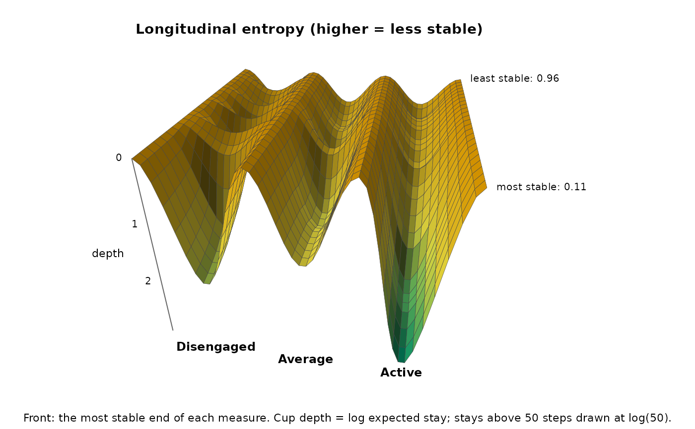

The cups of stability_landscape() drawn as a surface over a
second axis: a per-sequence stability measure from
sequence_metrics(), such as self-loop tendency or
longitudinal entropy. At each value of the measure, sequences are weighted
by a tricube kernel on their distance to that value over the k
nearest (Cleveland 1979), and each state's cup depth,
\(-\log(1 - P_{ii})\) (the log of its expected stay), is computed from
their weighted pooled transitions. Moving along the axis goes from the
most stable to the most volatile sequences.
Usage
landscape_surface(
x,
measure = "longitudinal_entropy",
states = NULL,
k = 30L,
n_grid = 25L
)
# S3 method for class 'net_landscape_surface'
summary(object, ends = TRUE, ...)
# S3 method for class 'net_landscape_surface'
print(x, digits = 2, ...)
# S3 method for class 'net_landscape_surface'
plot(x, max_stay = 50, theta = 10, phi = 30, ncol = NULL, ...)Arguments
- x
A transition network from
build_network()(method"relative"or"frequency"), a grouped one, or a wide sequence data frame or matrix. For theprint()andplot()methods: an object of classnet_landscape_surface.- measure
Character vector of numeric
sequence_metrics()columns, one surface each. Default"longitudinal_entropy".- states
Character vector naming every state once, in drawing order. Default: alphabetical.
- k
Integer. Nearest sequences per slice. Default 30 (capped at the number of sequences).
- n_grid
Integer. Slices between the 5th and 95th percentile of the measure. If these percentiles coincide for a nonconstant measure, its full range is used. Default 25.
- object
A
net_landscape_surfaceobject (forsummary()).- ends
Logical. In
summary():TRUE(default) compares the low and the high end of each measure;FALSEreturns every slice.- ...
Ignored.
- digits
Integer. Decimal places in
print(). Default 2.- max_stay
Numeric. In
plot(): cups of states whose expected stay exceeds this many steps (including states never left in a slice) are drawn at the depthlog(max_stay), a display floor only. Default 50.- theta, phi
- ncol
Integer or
NULL. Inplot(): panels per row. Default: one row per network, one column per measure.
Value
An object of class "net_landscape_surface" holding the
slices as one data frame (one row per network, measure, slice and
state), with states, measure and k.
In summary(): with ends = TRUE, a data frame with
one row per network, measure and state: group, measure,
state, low_value, depth_at_low, high_value,
depth_at_high; with ends = FALSE, every slice
(group, measure, value, state, depth,
dwell, effective_n).
In print(): x, invisibly.
In plot(): x, invisibly; draws one persp()
surface per network and measure on a shared depth scale.
Details
Network input replays per-sequence weighting, concatenation and boundary markers. Concatenated sequences are the resampling units. With a covariate, its value must be constant within each concatenated unit. Scaled, thresholded or otherwise modified networks whose weights do not match their stored sequences are refused; pass the original sequences to estimate a new landscape. Observed shares count prepared positions without sequence weighting. Phase windows retain the full sequence's weight.
The measures are computed from the same sequences as the depths, so the
cups of the most stable sequences are deep by construction (self-loop
tendency in particular is closely tied to the stay probabilities). What
the surface adds is which cup deepens as stability rises. A slice's
effective_n (\((\sum w)^2 / \sum w^2\)) shows how many sequences
it rests on. A state that does not occur in a slice has an NA
depth and leaves a gap in the surface.
Errors
nestimate_not_markov, nestimate_bad_input (unknown,
non-numeric or constant measure, bad states),
nestimate_landscape_unestimable (fewer than five usable sequences).
Warning nestimate_thin_slice when slices rest on fewer than five
effective sequences.
References
Cleveland, W. S. (1979). Robust locally weighted regression and smoothing scatterplots. Journal of the American Statistical Association, 74, 829–836.
Kramers, H. A. (1940). Brownian motion in a field of force and the diffusion model of chemical reactions. Physica, 7, 284–304.
Examples
net <- build_network(trajectories, method = "relative")
surf <- landscape_surface(net, measure = "longitudinal_entropy",
states = c("Disengaged", "Average", "Active"))
surf
#> Landscape surface: 3 states, 1 network x 1 measure, 30 nearest sequences per slice
#>
#> Cup depth (log of the expected stay) at the low and the high end of each measure:
#> measure state low depth_at_low high depth_at_high
#> longitudinal_entropy Disengaged 0.11 1.95 0.96 0.57
#> longitudinal_entropy Average 0.11 1.42 0.96 0.57
#> longitudinal_entropy Active 0.11 3.03 0.96 0.54
#>
#> Effective sequences per slice: network 13.3-25.7
# \donttest{
plot(surf)

# }